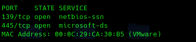
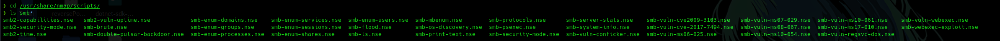
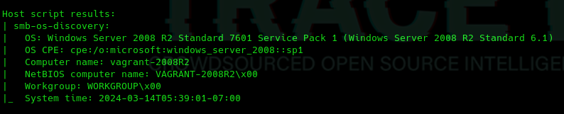
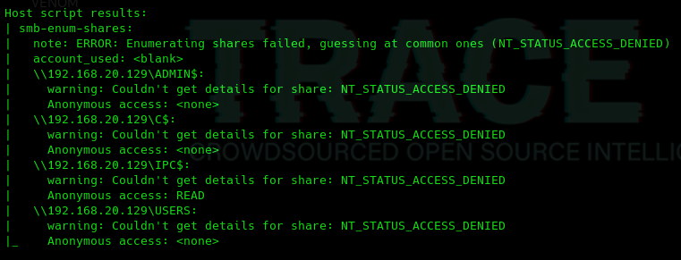

Protocolo SMB
Es un protocolo de red que se lleva utilizando durante muchos años en sistemas operativos Windows con el objetivo de compartir cosas como por ejemplo ficheros, carpetas compartidas, impresoras y cosas de este estilo a diferentes equipos, diferentes nodos que se encuentran en una red.
Ya nace como un protocolo que tiene un montón de problemas de seguridad.
SMB1, que lo implementan, pues algunos sistemas como por ejemplo Windows 2000 o Windows XP Windows 2003.
A lo largo del tiempo sale la segunda versión SMB 2 que comienza a implementarse con Windows Vista, luego SMB 2.1 que lo implementa Windows 7, SMB3 con Windows 8
Con el paso del tiempo han seguido surgiendo determinados problemas con este protocolo y además nosotros podemos utilizar este protocolo para tratar de hacer un descubrimiento de alguna manera de estos recursos compartidos que está ofreciendo una máquina determinada.
Comandos:
sudo nmap -v -sS -p 139,445 192.168.20.129

Podemos usar script para recopilar recursos que se estén compartiendo mediante este protocolo.

sudo nmap -v -sS -p 139,445 --script=smb-os-discovery 192.168.20.129

Analiza, entre otras cosas, esos paquetes que se intercambian y en función de esa información sabe si pertenece en este caso a un sistema operativo u otro.
sudo nmap -v -sS -p 139,445 --script=smb-enum-shares 192.168.20.129
